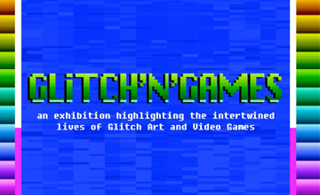
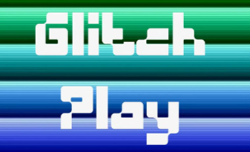
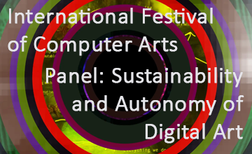
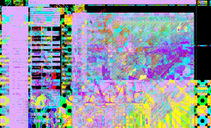
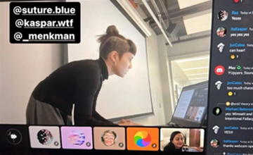
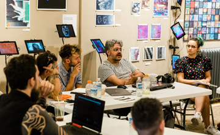

Glitch Play is my MFA thesis in Interactive Media and Game Development. It investigates engaging with glitches as a form of play that reveals and enables the ability to renegotiate with the structure of digital systems. You can read it here.
This exhibition explored the intertwined histories of glitch art and video games, featuring 40+ artists from over 5 countries, across two Pittsburgh venues.
As producer, curator, and organizer alongside John Bumstead and Nick Liberatore, I developed the show's conceptual framework and programmed workshops, discussions, and live demonstrations.
I created and moderated the Discussion Game, a participatory conversation format that gathered artists, theorists, and gamers to explore themes of play, control, and system disruption.
This panel of digital artists was brought together in Maribor, Slovenia to discuss digital archiving for community by community for MFRU 2023.
My IRL contributions to the discussion were not so much about my experience as an artist, but rather as a Do-It-Together (DIT) media archivist who is currently organizing, with a couple others— a free, downloadable, public access digital archive for the Glitch Art community.
Those of us working on this project believe that the more you rely on open software, the more accessible an archive becomes. That community projects can operate with more integrity when they remain unaffiliated with any institution(s). And most of all, we actively go against writing any “defining narrative(s),” but rather aim to offer an index of searchable artists and artists’ works, as well as any affiliated history, to enable many narratives to overlap, web and be formed by people of the community.
I was asked to review a self-curated selection from the 2023 /'FU:BAR/ EXPO. To challenge my own biases, I read only each artist's description before viewing their work, hoping connections would emerge organically.
The exhibition reveals precision and chaos as collaborators. From Tomasz Sulej's meticulous GLIC codec to APIACOAB's pixel-perfect narratives, deliberate control amplifies disorder, transforming glitches into intentional expression.
/NOT.GLI.TCH/H was held at the University of Chicago. I presented a talk about online community through the lens of my involvement with Glitch Artists Collective (GAC), likely the world’s largest Glitch Art community.
GAC was established in 2013 on Facebook first (though is also on Instagram, Twitter, and Tumblr) and I initially became involved as an artist near the end of 2014, later becoming curator (still am).
This discussion was had during the third iteration of GlitchArtIsDead, first shown in Poland in 2015. I moderated this roundtable discussion with Dr. Michael Betancourt and others.
Read the text script for "Here We Are"
Photo taken by Jim Jam
Colour Organ is a digital implementation of Alexander Wallace Rimington's color-music theory...
Discussion Game was a participatory conversation game that I developed and moderated for Glitch'N'Games’24...
Read the text script for "Discussion Game"
Photo taken by Nick Briz
An Uncanny Scene is a virtual environment exploring the aesthetic of curious discomfort...
Since 2014, I’ve created looping rotoscoped animations...
Most people know me for my digital/analog works, though since 2016, my fabrication practice has been my primary job...
Light Sleeper, Heavy Dreamer was a collaborative live performance...
Talking with Others
About
I’m Bee Nix, aka Suture Blue.
As a system amongst systems, I trace how internal states entangle with the larger technosocial worlds by interweaving play, technology, and social structures. Time-based and experiential works tend to be what I make the most.
View CV